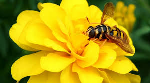
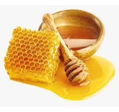
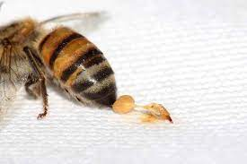
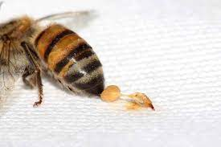

Iremos falar sobre:
1-Elas ajudam a garantir a vida no planeta
As abelhas prestam um serviço fundamental para a humanidade e a biodiversidade, pois são responsáveis pela polinização de aproximadamente 73% das plantas no mundo. “As abelhas garantem a variação genética tão importante ao desenvolvimento e reprodução das plantas e, com isso, garantem o equilíbrio dos ecossistemas e que existam plantas suficientes para a produção de oxigênio. São ainda consideradas um importante bioindicador da qualidade do meio ambiente”, acrescenta Ana Bueno, bióloga da ONG Bee or not to Be
2-Elas são parceiras da agricultura
Sem polinização, não temos produção de alimentos. Em Santa Catarina, o impacto econômico da apicultura vai muito além da produção de mel. Ele se reflete no ganho de produtividade de culturas como maçã, pera e ameixa, graças ao trabalho de polinização das abelhas. As abelhas também são indispensáveis para a produção de alimentos. Mais de 3/4 das espécies utilizadas pelo homem na agricultura dependem da polinização para uma produção de qualidade e quantidade significativas.
“No mundo, estima-se que os serviços ecossistêmicos da polinização correspondam a cerca de 10% do PIB agrícola, representando mais de 200 bilhões de dólares ao ano”, afirma Daniel Malusá.
Também de acordo com a FAO, 70% das culturas agrícolas dependem dos polinizadores. A polinização das abelhas é fundamental para garantir a alta produtividade e a qualidade dos frutos em diversas culturas agrícolas. Como exemplo, um levantamento encomendado pelo Departamento de Agricultura dos Estados Unidos indicou que 100% das espécies de amêndoas, 90% das maçãs e mirtilos, 48% dos pêssegos, 27% das laranjas, 16% do algodão e 5% da soja dependem das ações das abelhas para prosperar. Isso, só para citar alguns alimentos consumidos pelos humanos.
3-Abelha não produz só mel
Criar abelhas ainda se destina à produção de própolis, pólen, geleia real e apitoxina. Esses produtos servem de matéria-prima para as indústrias farmacêuticas, alimentícias e cosméticas e geram renda para milhares de famílias apicultoras.
 
O própolis é um produto elaborado pelas abelhas a partir de substâncias resinosas coletadas em brotos, flores, folhas e cascas de plantas. A estas substâncias, as abelhas adicionam secreções salivares, cera e pólen para obter esse hormônio natural. De forma geral, as abelhas raspam as substâncias resinosas encontradas nas várias partes da planta com a mandíbula e manipulam com as patas, acondicionando-as nas corbículas.
Nesse processo, elas acrescentam secreções salivares e grãos de pólen a elas. Na colmeia, a resina é retirada da corbícula e manipulada com adição de cera, mais secreções salivares e eventualmente mais pólen. O própolis é fundamental e imprescindível na higienização do interior da colmeia, assim como na vedação de aberturas externas, eliminação de espaços indesejáveis e não transitáveis, renovação constante de película protetora nos favos de postura e depósito de alimentos.